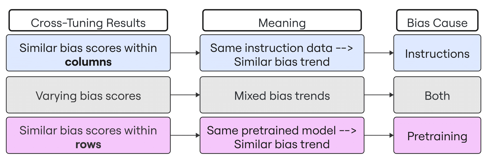
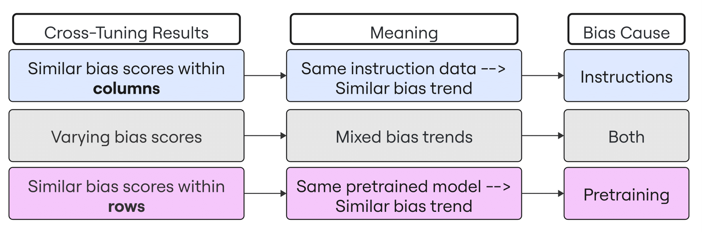

Planted in Pretraining, Swayed by Finetuning A Case Study on the Origins of Cognitive Biases in LLMs
Itay Itzhak, Yonatan Belinkov, Gabriel Stanovsky
Technion · Hebrew University · Allen Institute for AI
Itay Itzhak, Yonatan Belinkov, Gabriel Stanovsky
Technion · Hebrew University · Allen Institute for AI
We investigate the causal origin of cognitive biases in LLMs. Using a novel two-step causal framework, we find that biases primarily originate during pretraining, while instruction tuning and training randomness have only minor effects. These results suggest that many observed behaviors in LLMs, such as framing effects, belief bias, and stereotyping, are inherited from the pretraining phase. They are surfaced, not introduced, by finetuning. Our findings highlight the importance of addressing bias at the pretraining stage to develop more trustworthy and interpretable models.

Large language models (LLMs) exhibit cognitive biases, which are systematic deviations from rational decision-making similar to those observed in humans. While prior work has noted the presence and amplification of such biases in instruction-tuned models, the origins of these behaviors remain unclear. We introduce a two-step causal methodology to disentangle the contributions of pretraining, instruction data, and training randomness. First, we assess how model behavior varies across random seeds. Then, using a cross-tuning setup, we swap instruction datasets between two models with different pretraining histories. Across 32 cognitive biases and two instruction datasets (Flan and Tulu-2), we find that pretraining overwhelmingly determines the model’s bias pattern. These insights highlight the central role of pretraining in shaping LLM behavior and have implications for evaluation and mitigation strategies.
We examine the effect of random seed variation by finetuning each model three times with identical data and varying initialization. Bias scores and task accuracy (MMLU) are measured across seeds to assess stability.
Result: Training randomness introduces moderate variation, especially in behavioral biases, though key trends remain consistent. Aggregating results across seeds, using the mean or majority vote, stabilizes bias estimates and preserves the original model’s tendencies.
To separate the effects of pretraining from instruction data, we cross-tune two models (OLMo-7B and T5-11B) on each other's datasets (Tulu-2 and Flan). This creates four model variants with distinct combinations of pretraining and instruction. We then analyze their behavior using PCA on bias vectors and assess cluster separability.
 

Result: Models cluster by pretraining backbone, not instruction data. Even after swapping instruction datasets, bias profiles remain aligned with pretraining. In the PCA plots below, fill color indicates pretraining and shape denotes instruction tuning -- PC1 clearly separates models by pretraining, confirming its dominant effect. This pattern holds across 32 biases and is replicated with community-trained models (Llama2-7B and Mistral-7B fine-tuned on Tulu-2 and ShareGPT).

Cognitive biases in LLMs are shaped during pretraining, not introduced during instruction tuning or caused by randomness. Our causal analysis shows that post-hoc alignment methods alone may not be sufficient for bias mitigation. These findings highlight a broader truth: many downstream behaviors of LLMs are reflections of their pretraining process. If we want to build models that are more reliable and fair, we must consider the impact of pretraining.
Cognitive biases in LLMs have been observed in various contexts, from decision-making to reasoning tasks. Prior work, such as Echterhoff et al. (2024) and Koo et al. (2024), has demonstrated that models exhibit human-like framing and belief biases. Other studies, like Alsagheer et al. (2024) and Shaikh et al. (2024), proposed benchmarks and frameworks to evaluate such behavior in instruction-tuned LLMs.
A growing line of research investigates whether these biases stem from instruction tuning. Itzhak et al. (2024) showed that instruction tuning can amplify certain cognitive biases in language models, suggesting a link between alignment methods and biased behaviors. However, other work suggests instruction tuning may only surface pre-existing tendencies. For example, Antoniades et al. (2024) and Groeneveld et al. (2024) argue that most model capabilities—both helpful and harmful—are planted during pretraining and merely activated by tuning.
Our study builds on this foundation with a causal framework that isolates the roles of pretraining, instruction data, and training randomness. While prior work has hinted at the influence of pretraining (e.g., Dasgupta et al., 2022; Binz & Schulz, 2022), we systematically demonstrate that biases consistently align with a model’s pretraining history, even under cross-tuning and seed variation. Our findings underscore the limitations of post-hoc alignment for bias mitigation and advocate for interventions at the pretraining stage.
@misc{itzhak2025plantedpretrainingswayedfinetuning,
title={Planted in Pretraining, Swayed by Finetuning: A Case Study on the Origins of Cognitive Biases in LLMs},
author={Itay Itzhak and Yonatan Belinkov and Gabriel Stanovsky},
year={2025},
eprint={2507.07186},
archivePrefix={arXiv},
primaryClass={cs.CL},
url={https://arxiv.org/abs/2507.07186},
}